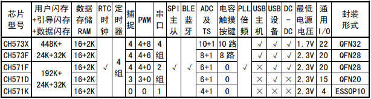

CH573¶
GitHub : RISC-V3A USB BLE4.2 AES128 UART TouchKey QFN28
Xin简介¶
对这款芯片的认知就是：便宜到根本不需要再向下考虑性价比SoC，钳位￥2元档性价比之王

规格参数¶
基本参数¶
特征参数¶
RISC-V3A 60 MHz，支持RV32 IMAC指令集，支持单周期乘法和硬件除法
SPI x 2 + UART x 4 (16C550/6Mbps)
BLE 4.2 (RX-96dBm，TX+5dBm)
USB ，支持USB2.0全速和低速主机或设备
多种低功耗模式：Idle，Halt, Sleep, Shutdown, 内置电池电压低压监控，最低睡眠电流0.3uA
2 组端口PA和PB，22 x GPIO
内置温度传感器
集成2.4GHz RF收发器和基带及链路控制，提高优化的协议栈和应用层API，支持组网 (0dBm发送功率时电流为6mA)
内置实时时钟RTC，支持定时和触发两种模式
提供8通道12位ADC模数转换器，支持8通道触摸按键 TouchKey
提供20个GPIO，其中4个支持5V信号输入，所有GPIO支持中断和唤醒功能
内置AES-128加解密单元，芯片唯一ID
Hint
CH573 最吸引人的地方在QFN28封装下，包括4个串口、BLE和USB外设，支持ICP、ISP和IAP，支持BLE OTA，性价比十分高。
芯片架构¶

功耗参数¶
电压范围：2.25V/3.3V (内置DC/DC)
功耗范围：
温度范围：-40 °C to 85/125 °C

连接能力¶
UART |
SPI |
||||
|---|---|---|---|---|---|
4 |
2 |
4.2 |
FS |
BLE¶
-96dBm +5dBm
Bluetooth Low Energy 4.2
接收灵敏度-96dBm，可编程+5dBm 发送功率
USB¶
集成 USB 2.0 全速收发器 PHY
Xin选择¶
品牌对比¶
就该产品的定位而言，国产极致性价比路线，就产品规格而言少有对手，即使有也难以完全对标
就 Bluetooth 连接能力而言，国产有较多的新产品出现
Characteristics |
UART/SPI |
||||||
|---|---|---|---|---|---|---|---|
18KB/512KB |
USB |
BLE4.2 |
4/1 |
QFN28 |
|||
系列对比¶
Mark |
RAM |
Flash |
UART/SPI |
BLE |
USB |
Ethernet |
|
|---|---|---|---|---|---|---|---|
RISC-V 20M |
18K |
512K |
4/1 |
4.2(+5dBm) |
USB H/D |
NO |
|
RISC-V 20M |
32K |
1024K |
4/1 |
5.1(+5dBm) |
2 x USB |
NO |
|
40MHz |
32K |
250K |
4/2 |
4.2(+5dBm) |
USB H/D |
10M |
版本对比¶
Hint
CH573Q 和 CH571K 因封装形式所限，射频性能相比 QFN 封装形式略有下降
CH571¶
CH571 基于 CH573 去掉了 USB host 主机和触摸按键检测模块、8 位 PWM 模块和两个串口，FlashROM 总容量仅 256KB，ADC 不支持 DMA，只支持 2.3V 以上电源电压。除了上述差异，其它基本与CH573 相同，可直接参考 CH573 手册和资料。
Xin应用¶

串口控制器¶
方案简介¶
通过USB连接PC端实现实时数据上报和指令接收，通过下行的串口控制下行通信设备，同时可以连接蓝牙网络组合控制
CH573F端口¶
USB: PB10/PB11
SPI: PA12/PA13/PA14/PA15
UART0: PB4/PB7
UART1: PA8/PA9
UART2: PB23/PB22
UART3: PA4/PA5
Warning
CH573 没有配置I2C